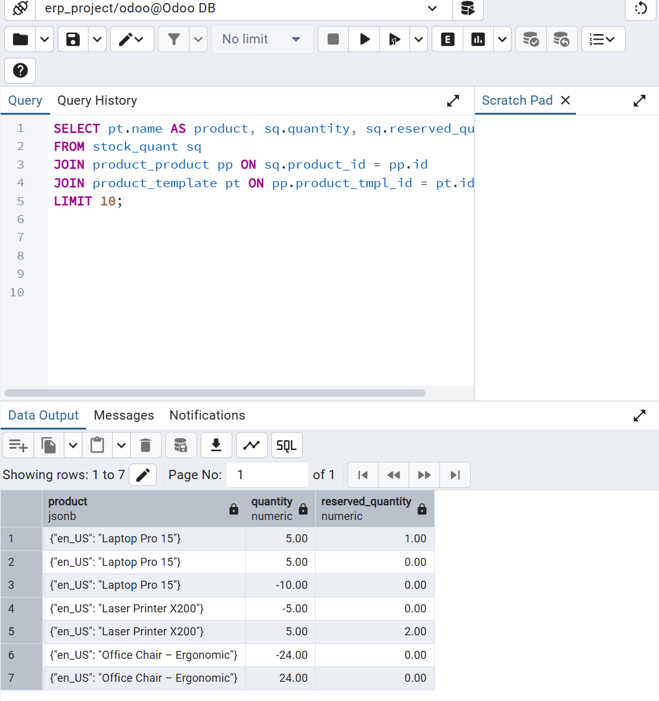

Overview
This demo project showcases how I set up a sample ERP system (Odoo), generated sales and purchase transactions, extracted data from the backend PostgreSQL database using SQL, and then visualized business KPIs in Power BI. The project highlights end-to-end ERP data integration, transformation, and analytics.
Walkthrough

1. Odoo ERP dashboard after installation and module configuration.

2. Created sample customers and vendors in ERP to simulate business transactions.

3. Configured demo products with categories for sales and purchases.

4. Captured a new sales order for Customer A with multiple products.

5. Logged vendor purchases to simulate supply chain activity.

6. Defined employees and roles for access/security demo.

7. Tracked order processing through ERP workflow states.

8. Generated invoices for recorded sales transactions.

9. Wrote SQL queries to extract transactional data from PostgreSQL ERP backend.

10. Performed joins and aggregations to prepare data for BI analysis.

11. Verified clean and structured output ready for Power BI import.

12. Imported data into Power BI for KPI visualization.
13. Power BI dashboard showing Total Sales, Purchases, Stock, and Profit trends.